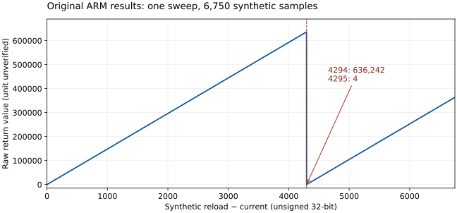

핵심 요약
- 하위 시간 변환 함수는 재적재 값과 현재 카운터의 차이에 1,000,000을 곱하고 6,749로 나눈 몫을 돌려줍니다. 이때 곱의 하위 32비트만 남깁니다.
- 재적재 값을 6,749로 두고 차이를 0부터 6,749까지 바꿔 가며 원본 기계어를 실행했습니다. 경계 사례 4개를 합쳐 6,754회 실행했고, 결과는 모두 식과 같았습니다.
- 차이가 4,294일 때 636,242이던 결과가 4,295에서 4로 떨어집니다. 곱이 32비트를 넘는 지점입니다.
- 이것은 직접 만든 입력으로 본 계산 결과입니다. 실제 카메라의 카운터가 그 범위까지 가는지, 그래서 시각이 틀어지는지는 확인하지 못했습니다.
확인 원본 코드 실행으로 확인
- 함수의 정수 계산식 (6,754회 모두 일치)
- 결과가 줄어드는 곳은 차이 4,295 한 곳
- 함수가 타이머 레지스터 값을 바꾸지 않음
정적 분석 코드를 읽어서 판단
- 이 함수를 부르는 두 곳과 반환값을 저장하는 명령
모델 시험 조건으로 정한 것
- 재적재 값 6,749와 카운터 값은 직접 넣은 수
- 레지스터 주소는 일반 메모리로 대신함
- 인터럽트 차단·복원 함수는 대체 함수
미확인 확인하지 않은 것
- 실제 카운터가 지나는 범위
- 반환값의 물리 단위
- 실제 시각 값이나 사용자가 느끼는 동작에 미치는 영향
배경: 틱보다 잘게 시간을 재는 방법
커널의 64비트 카운터는 타이머 인터럽트가 올 때만 움직입니다(타이머 설정과 64비트 카운터). 그 사이의 시간을 알고 싶으면 하드웨어 타이머가 지금 어디까지 세었는지를 읽어야 합니다. 이 문서의 함수가 그 일을 합니다. 재적재 값에서 현재 카운터 값을 빼면 “직전 재적재 뒤로 얼마나 세었는가”가 나오고, 여기에 상수를 곱하고 나누어 정수 하나로 환산합니다.
환산 과정에서 문제가 되는 것은 중간값의 폭입니다. 32비트 레지스터끼리 곱하면 결과는 최대 64비트가 되지만, ARM의 MUL 명령은 그 가운데 하위 32비트만 남깁니다. C 언어의 부호 없는 32비트 곱셈과 같은 동작이고, 넘친 윗자리는 오류 없이 사라집니다.
- 이 문서
- 사슬의 다른 문서(제목을 누르면 이동)
이 함수의 반환값을 받아 쓰는 쪽은 시각 조회 함수 두 개입니다. 재적재 값 6,749가 레지스터에 기록되는 과정은 보드 초기화의 레지스터 기록에 있습니다.
곱한 값의 하위 32비트만 남습니다
계산은 세 단계입니다. 차이를 구하고, 1,000,000을 곱해 32비트로 자르고, 6,749로 나눕니다. 둘째 단계에서 잘린 윗자리는 되살아나지 않습니다.
- 원본 코드 실행으로 확인한 단계
- 결과를 바꾸는 단계
d = (reload − current) mod 2³²
p = (d × 1,000,000) mod 2³²
result = floor((p × 0x9b5e1bb1) / 2⁴⁴)이 식은 원본 ARM 명령을 그대로 옮긴 것입니다. 디컴파일된 C에는 부호 있는 정수의 곱셈과 나눗셈으로 나오는데, 그 표현으로는 중간값이 어디서 잘리는지 정확히 알 수 없습니다. 그래서 식은 ARM 명령에서 직접 세웠습니다.
곱하는 상수 0x9b5e1bb1은 244을 6,749로 나누어 올림한 값(2,606,635,953)입니다. 나눗셈을 곱셈과 자리 이동으로 바꾸는 흔한 방법이고, 32비트 범위의 모든 p에서 p ÷ 6,749의 몫과 같은 결과를 냅니다. 6,749는 보드 초기화가 타이머에 써넣는 재적재 값과 같은 수입니다.
함수 구간과 핵심 명령
| 주소 | 명령 | 하는 일 |
|---|---|---|
0x525b5c6c | ldr r3, [r2, #0xd8] | 재적재 값 읽기 (레지스터 0x1e0000d8) |
0x525b5c70 | ldr r4, [r2, #0xd4] | 현재 카운터 읽기 (레지스터 0x1e0000d4) |
0x525b5c74 | rsb r4, r4, r3 | 차이 d |
0x525b5c7c, 0x525b5c84 | movw·movt r3 | 상수 1,000,000 (0xf4240) |
0x525b5c80, 0x525b5c88 | movw·movt r2 | 상수 0x9b5e1bb1 |
0x525b5c8c | mul r3, r3, r4 | 32비트 곱 p |
0x525b5c90 | umull r2, r3, r3, r2 | 64비트 곱 |
0x525b5c94 | lsr r0, r3, #0xc | 상위 워드를 12비트 더 밀어 합계 44비트 이동 |
함수 구간은 0x525b5c60–0x525b5c9c입니다. 레지스터를 읽는 앞뒤로 인터럽트 차단 0x525b6144와 복원 0x525b6154를 부릅니다. 구간 해시는 update-subtick-arithmetic-evidence.json에 있습니다.
차이가 4,295가 되면 결과가 4로 떨어집니다
4,295 × 1,000,000은 232보다 32,704만큼 큽니다. 32비트에는 그 32,704만 남고, 6,749로 나눈 몫은 4입니다.


- 32비트 안에 들어가는 구간
- 윗자리가 잘리는 구간
| 합성 차이 d | 반환값 | 자르지 않았다면 (계산값) | 해석 |
|---|---|---|---|
| 0 | 0 | 0 | 차이가 없음 |
| 1 | 148 | 148 | 1,000,000 ÷ 6,749의 몫 |
| 4,294 | 636,242 | 636,242 | 곱이 32비트를 넘기 직전 |
| 4,295 | 4 | 636,390 | 곱이 32비트를 넘음 |
| 6,749 | 363,614 | 1,000,000 | 이 조회의 마지막 입력 |
재적재 값은 보드 초기화에서 관측한 상수 6,749로 고정하고, 차이 d를 0부터 6,749까지 하나씩 바꿔 원본 ARM 코드를 실행했습니다. 6,750개 결과를 모두 정수식과 대조했고, 결과가 앞의 값보다 줄어드는 곳은 d = 4,295 한 곳뿐이었습니다. 출력 전체의 해시도 기록해 두었습니다.
“자르지 않았다면” 열은 같은 식에서 32비트 자르기만 뺀 계산값으로, 원본 코드가 내는 값이 아닙니다. 차이가 클 때 반환값이 얼마나 달라지는지 보려고 넣었습니다.
차이 계산 자체의 순환
첫 단계의 뺄셈도 32비트 안에서 돕니다. 현재 값이 재적재 값보다 크면 차이는 음수가 아니라 아주 큰 양수가 됩니다. 이 경계는 사례 4개로 따로 확인했습니다.
| 재적재 값 | 현재 값 | 반환값 |
|---|---|---|
| 0 | 0 | 0 |
| 0 | 1 | 636,237 |
0xffffffff | 0 | 636,237 |
0xffffffff | 0xffffffff | 0 |
연속 조회 6,750개는 검증 기록에서 사례 하나로 셉니다. 경계 사례 4개를 더해 사례는 5개, ARM 실행은 6,754회입니다. 타이머 레지스터 주소는 에뮬레이터의 일반 메모리이고, 인터럽트 차단·복원 함수는 대체 함수입니다. 함수를 실행하기 전과 뒤에 레지스터 영역의 내용이 같은지도 매번 확인했습니다. 실제 카운터가 0부터 6,749까지의 범위를 모두 지난다는 가정은 검증하지 않았습니다.
이 값을 받아 쓰는 함수는 두 개입니다
두 시각 조회 함수가 이 함수를 불러, 돌려받은 값을 호출자가 넘긴 출력 포인터에 저장합니다.
| 호출하는 함수 | 호출 위치 | 저장 위치 | 저장 대상 |
|---|---|---|---|
0x525ce390 | 0x525ce3fc | 0x525ce400 | 함수에 들어올 때 둘째 인수(r1)로 받은 포인터 |
0x525ce45c | 0x525ce4c8 | 0x525ce4cc |
호출 관계는 코드를 읽어 확인했습니다. 두 함수의 선택한 경로는 시각 조회 함수에서 원본 기계어로 따로 실행했고, 거기서도 하위 시간 출력은 이 문서의 식과 같았습니다. 그 함수들을 실제로 부르는 쪽과 출력이 쓰이는 곳은 아직 찾지 못했습니다.
공개 T-Kernel 2.0의 참조 구현에는 같은 자리에 get_hw_timer_nsec가 있습니다. 직전 타이머 인터럽트 뒤 흐른 시간을 나노초로 돌려주는 함수이고, 곱셈을 64비트로 합니다. 이 펌웨어의 함수가 같은 역할이라면 반환값은 나노초이고 1,000,000은 1밀리초에 해당합니다. 그러나 이 펌웨어에서 단위를 확인한 것은 아니므로 해석으로만 둡니다.
한계와 남은 과제
- 확인한 것은 함수 하나의 정수 계산입니다. 직접 만든 입력에 대한 반환값까지만 말할 수 있습니다.
- 실제 영향은 모릅니다. 시각 값이 거꾸로 가는지, UI 지연이 어긋나는지, 촬영 시간이 틀리는지, 사용자가 느낄 수 있는지를 이 결과로 입증하지 않습니다.
- 입력 범위를 모릅니다. 실제 타이머가 어떤 주파수로 돌고 카운터 차이가 어디까지 커지는지 확인하지 못했습니다. 차이가 4,294를 넘지 않는 조건이라면 넘침은 생기지 않습니다.
- 반환값의 단위와 올바른 입력 범위는 정해지지 않았습니다. 시간 단위에 대한 현재 판단은 타이머 설정과 64비트 카운터에 정리했습니다.
- 남은 일은 타이머 채널의 실제 동작 범위와, 시각 조회 함수의 출력을 쓰는 코드를 찾는 것입니다. 카메라, 인터럽트, 주변장치 동작은 검사하지 않았고 펌웨어 빌드·기록도 하지 않았습니다.
재현 방법
입력은 따로 잘라 낸 RTOS 파일이나 통합 decoded 파일이고, 스크립트는 그 파일을 읽기만 합니다. SHA-256과 적재 주소는 UI 타이머 문서의 재현 방법과 같습니다. Python 패키지 unicorn이 필요합니다.
python verify_update_subtick_arithmetic.py rtos.bin --output subtick-arithmetic.json공개하지 않고 보관한 자료는 디컴파일 C 1개, 보조 구간 2개, ARM 명령 113 words입니다. 그래프의 좌표는 정수식과 대조했습니다.
근거 파일과 참고 자료
- update-subtick-arithmetic-checks.json — 실행 결과와 6,750개 출력 배열의 해시
- update-subtick-arithmetic-evidence.json — 핵심 명령, 구간 해시, 한계
- verify_update_subtick_arithmetic.py — 검증 스크립트
- update-subtick-arithmetic.svg — 연속 조회 그래프
- 시각 조회 함수 — 이 값을 받아 출력하는 두 함수 · 타이머 설정과 64비트 카운터 — 재적재 값 6,749의 출처
- ARM Architecture Reference Manual (ARM DDI 0100I) —
MUL은 곱의 하위 32비트만 남기고,UMULL은 64비트 결과를 레지스터 두 개에 나눠 담는다는 정의 - C11 표준 초안 N1570 6.2.5절 9항 — 부호 없는 정수 계산은 넘치지 않고 표현 범위로 나눈 나머지가 된다는 규정
- T-Kernel 2.0 참조 구현의 tkdev_timer.h —
get_hw_timer_nsec